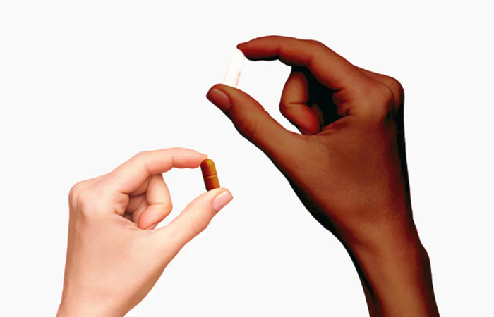
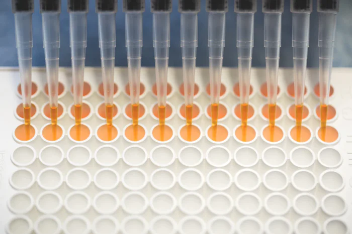

Silver Tsunami


The science of longevity is constantly evolving every single day, every single second.
Scientifically proven root causes of why your body age.
----- 01
Genomic Instability
Our body's internal spell-check for DNA becomes less effective over time. This leads to more errors in our genetic code, destabilizing genes and causing them to malfunction.
Can Cause: Imagine typos in a critical report causing confusion. Similarly, these genetic "typos" can cause cancers, impaired cell function, or even cell death.
Solution: NMN (Nicotinamide Mononucleotide), CoQ10, both boost cellular energy and help in DNA repair.
----- 02
Telomere Attrition
Imagine our chromosomes are shoelaces; telomeres are the protective caps at the ends. With age, these caps shorten, eventually making it difficult for cells to divide and renew themselves.
Can Cause: It's like an engine losing screws; eventually, it breaks down. This leads to age-related diseases and premature cell death.
Solution: Trans-Resveratrol, may slow down telomere shortening by activating the enzyme telomerase..
----- 03
Epigenetic Regulation
Imagine genes as volumes in a massive library. Epigenetic changes are like a mischievous librarian who changes the volume of certain books without altering their text, disrupting the harmony.
Can Cause: The librarian's mischief can cause a mess in our "library", leading to various diseases, including cancer, Alzheimer's, and cardiovascular diseases.
Solution:Supplements like Ginger, AKG, L-Glycine, Curcumin, and Apigenin may help manage our genes' activity and mitigate aging effects.
----- 04
Loss of Proteostasis
Proteins are the building blocks of cells. As we age, cells lose their ability to manage these blocks—balance their production and removal—which can lead to diseases.
Can Cause: When the balance of building blocks (proteins) is off, the structure can collapse. This can lead to diseases like Alzheimer's, Parkinson's, and others.
Solution:Supplements such as NMN, L-Glycine, EGCG,andFisetin can potentially aid in maintaining the balance between protein creation and removal, assisting in cell health.
----- 05
Deregulated Nutrient Sensing
Nutrient sensing is like a cell's taste buds. As we age, these taste buds can malfunction, causing cells to misjudge the amount of nutrients, leading to issues like obesity and diabetes.
Can Cause: If your taste buds fail and you overeat, obesity might follow. Similarly, cells overreacting or underreacting to nutrients can lead to obesity, diabetes, and heart disease.
Solution:Supplements like NMN, Ginseng, Trans-Resveratrol, NAC and ALA may assist in correcting the cells' perception of nutrients, aiding metabolic health.
----- 06
Mitochondrial dysfunction
Mitochondria are the powerhouses of our cells. As we age, these powerhouses become less efficient, reducing the energy supply and making cells weak and susceptible to damage.
Can Cause: If powerhouses fail, cities (cells) lose power. The result can be neurodegenerative diseases, heart disease, and diabetes.
Solution: CoQ10, NMN both are beneficial for mitochondrial health.
----- 07
Cellular Senescence
Older cells often enter a state where they can't divide but still consume resources, like lazy workers in a factory. These 'zombie' cells can cause various health problems.
Can Cause: These "lazy" cells not only eat up resources but also contribute to aging, inflammation, and cancer due to harmful substances they release.
Solution:Supplements likeFisetin, Quercetin, and Apigenin both are beneficial for mitochondrial health.
----- 08
Stem Cell Exhaustion
Stem cells are like a repair crew that fixes body damage. But with time, this crew gets fewer and less efficient, leading to slower healing and aging signs.
Can Cause:If the repair crew is out of action, damage will accumulate. This can slow wound healing and weaken the immune system.
Solution:Supplements like NMN and Ca-AKG may help rejuvenate the body's stem cell populations, promoting repair and renewal.
----- 09
Altered Intercellular Communication
Cells communicate to coordinate their efforts. As we age, this cellular chit-chat becomes less effective, leading to various aging issues, like inflammation and weakened immunity.
Can Cause:When cell 'chit-chat' breaks down, it's like a team working without coordination, leading to inflammation and weakened immune response.
Solution:Apigenin,has anti-inflammatory properties, helping maintain cell communication.
----- 10
Microbiome Disturbance
Just as disrupted harmony in a symphony can spoil the performance, imbalances in our body's microbial community can lead to health issues.
Can Cause:Imagine hostile forces disrupting a peaceful society, causing unrest and disorder. Similarly, such disturbances can cause gut issues, obesity, and influence mental health.
Solution: Decode Biome for microbiome testing and adjustment. Probiotic supplements and a fiber-rich diet can help maintain a healthy gut microbiome.
----- 11
Compromised Autophagy
Autophagy is our cells' cleaning service, disposing of waste. With age, this service can become inefficient, akin to a city's garbage system failing.
Can Cause:If waste piles up in a city, it becomes a breeding ground for diseases. Similarly, compromised autophagy can lead to conditions like Alzheimer's, Parkinson's, and cancer.
Solution:Spermidine, NMNthese promote autophagy, helping to clear cellular garbage.
----- 12
Inflammation
Inflammation is our body's fire alarm system. Aging can make it overly sensitive, setting off false alarms and causing unnecessary damage.
Can Cause:Just as false alarms can cause panic and chaos, chronic inflammation can damage tissues and organs and lead to diseases like heart disease, diabetes, and cancer.
Solution:Supplements like Quercetin, Apigenin, and Fisetinhave anti-inflammatory properties that may help control chronic inflammation, a key contributor to many age-related conditions.
----- 13
Splicing Dysregulation
Gene splicing is like a film editing process, deciding what parts of the genetic movie to keep or cut. Aging can mess up this editing, causing genes to work improperly.
Can Cause:A poorly edited film can confuse viewers; similarly, dysregulated splicing can cause various diseases, including cancer and neurodegenerative diseases.
Solution:No specific supplement identified yet for splicing dysregulation. General health maintenance with diet, exercise, and regular medical check-ups is advisable.
----- 14
Altered Mechanical Properties
Aging can change our tissues' mechanical properties, like a well-used machine gradually losing its smooth operation.
Can Cause:A rusty machine can break down or malfunction. Similarly, these changes can cause heart disease, lung disease, osteoarthritis, and other age-related conditions.
Solution:Regular physical exercise and mobility activities can help maintain tissue elasticity and strength. Supplementation with CoQ10, NMN might be beneficial for tissue health.
The average life expectancy of Indians has increased exponentially over the past two centuries, while the fertility rate is declining at an alarming rate. This change in demography is leading us to the inevitable Silver Tsunami.
Silver Tsunami
51%
of the population dies due to age-related diseases